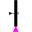
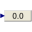

ExecutionPathsExample to demonstrate parallel and alternative execution paths |
|
Diagram
{kind=link}
Information
This information is part of the Modelica Standard Library maintained by the Modelica Association.
This is an example to demonstrate in which way parallel activities can be modelled by a StateGraph. When transition1 fires (after 1 second), two branches are executed in parallel. After 6 seconds the two branches are synchronized in order to arrive at step6.
Before simulating the model, try to figure out whether which branch of the alternative sequence is executed. Note, that alternatives have priorities according to the port index (alternative.split[1] has a higher priority to fire as alternative.split[2]).
Components (23)
| step0 |
Type: InitialStep |
|
|---|---|---|
| transition1 |
Type: Transition |
|
| step1 |
Type: Step |
|
| transition2 |
Type: Transition |
|
| step6 |
Type: Step |
|
| step2 |
Type: Step |
|
| transition3 |
Type: Transition |
|
| transition4 |
Type: Transition |
|
| step3 |
Type: Step |
|
| step4 |
Type: Step |
|
| transition5 |
Type: Transition |
|
| transition6 |
Type: Transition |
|
| step5 |
Type: Step |
|
| setReal |
Type: RealExpression |
|
|  | transition7 |
Type: TransitionWithSignal |
| setCondition |
Type: BooleanExpression |
|
| transition4a |
Type: Transition |
|
| step4a |
Type: Step |
|
| transition6a |
Type: Transition |
|
|  | NumericValue1 |
Type: RealValue |
| alternative |
Type: Alternative |
|
| Parallel1 |
Type: Parallel |
|
| stateGraphRoot |
Type: StateGraphRoot |